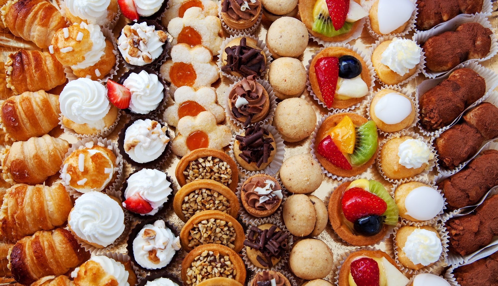
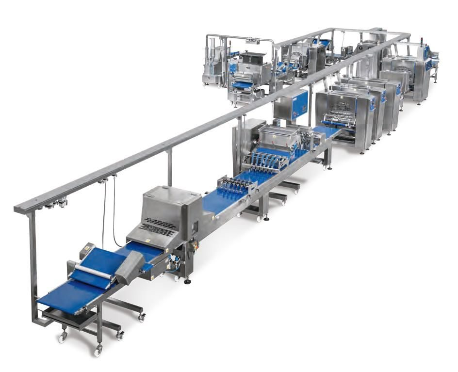
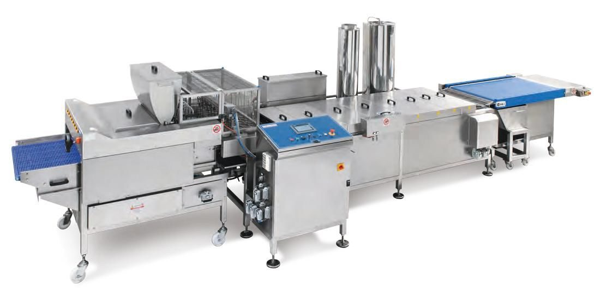

Кондитерское оборудование
Миксеры, дозаторы и линии для слоёного теста, круассанов, пончиков и тортов.

Оборудование раздела

CANOL
Линии ламинации теста
2 или 3 станции сложения · Компоновки U, L и S

CANOL
Дозаторы начинки
3 600–7 200 шт./ч у серии SIR · Бункеры от 50 до 95 л

CANOL
Линии обжарки пончиков
Модификации 180, 260, 400 и 500 · Контроль уровня масла

CANOL
Линии для круассанов
Нарезка и формование · Модульное исполнение